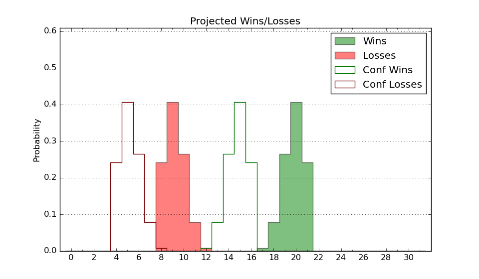

| Home | Game Probabilities | Conferences | Preseason Predictions | Odds Charts | NCAA Tournament |
| City: | Ogden, Utah | |
| Conference: | Big Sky (2nd)
| |
| Record: | 12-4 (Conf) 17-8 (Overall) | |
| Ratings: | Comp.: 0.1 (165th) Net: -0.0 (165th) Off: 103.9 (146th) Def: 103.9 (200th) SoR: 0.1 (141st) |
| Remaining | ||||||
|---|---|---|---|---|---|---|
| Date | Opponent | Win Prob | Pred. | |||
| 2/19 | Northern Colorado (214) | 72.3% | W 84-77 | |||
| 2/24 | @ Portland St. (296) | 63.9% | W 77-73 | |||
| 2/26 | @ Northern Arizona (322) | 73.2% | W 76-69 | |||
| 3/5 | Southern Utah (194) | 69.3% | W 81-75 | |||
| Previous | Game Score | |||||
| Date | Opponent | Win Prob | Result | Off | Def | Net |
| 11/15 | @Duquesne (259) | 55.1% | W 63-59 | -16.1 | 17.9 | 1.9 |
| 11/18 | (N) Massachusetts (171) | 51.3% | W 88-73 | 20.1 | 2.4 | 22.5 |
| 11/19 | (N) Ball St. (268) | 71.7% | W 85-74 | 4.0 | 6.8 | 10.8 |
| 11/21 | (N) Green Bay (346) | 88.7% | W 68-58 | -8.7 | 4.0 | -4.7 |
| 11/27 | @Dixie St. (287) | 61.9% | W 87-70 | 14.0 | 7.8 | 21.8 |
| 12/2 | Northern Arizona (322) | 90.3% | W 67-44 | -23.7 | 33.4 | 9.7 |
| 12/4 | Portland St. (296) | 85.8% | W 80-69 | 1.1 | -0.9 | 0.2 |
| 12/8 | @Washington St. (48) | 10.7% | L 60-94 | -7.4 | -19.7 | -27.0 |
| 12/15 | Utah St. (55) | 31.5% | L 80-95 | 6.2 | -18.9 | -12.8 |
| 12/18 | BYU (60) | 32.5% | L 71-89 | -5.3 | -9.4 | -14.7 |
| 12/23 | Fresno St. (66) | 34.1% | L 43-69 | -25.4 | -9.2 | -34.6 |
| 12/30 | @Montana St. (149) | 32.1% | W 85-75 | 18.3 | 3.2 | 21.5 |
| 1/1 | @Montana (255) | 54.7% | L 72-74 | 5.3 | -7.0 | -1.7 |
| 1/13 | Idaho (325) | 90.6% | W 84-74 | -9.7 | 1.4 | -8.3 |
| 1/17 | @Idaho St. (341) | 80.6% | W 78-61 | -5.3 | 15.7 | 10.4 |
| 1/20 | Idaho St. (341) | 93.4% | W 95-63 | 13.8 | 2.4 | 16.2 |
| 1/24 | @Southern Utah (194) | 39.9% | W 92-84 | 16.5 | -2.7 | 13.8 |
| 1/27 | @Northern Colorado (214) | 43.4% | W 85-76 | 7.2 | 11.6 | 18.8 |
| 1/29 | @Sacramento St. (336) | 78.0% | W 79-59 | 25.4 | -5.9 | 19.5 |
| 1/31 | Eastern Washington (224) | 74.2% | W 90-84 | 5.8 | -4.3 | 1.5 |
| 2/3 | Montana (255) | 80.4% | W 80-75 | 9.2 | -13.0 | -3.9 |
| 2/5 | Montana St. (149) | 61.7% | L 57-78 | -20.7 | -15.7 | -36.3 |
| 2/10 | @Eastern Washington (224) | 45.7% | L 67-75 | -12.1 | 5.6 | -6.5 |
| 2/12 | @Idaho (325) | 73.8% | L 79-83 | -5.4 | -10.5 | -15.9 |
| 2/17 | Sacramento St. (336) | 92.4% | W 65-50 | -5.7 | 4.3 | -1.4 |
| Stats & Trends | |||||
|---|---|---|---|---|---|
| Current | Day | Week | Month | Season | |
| Composite | 0.1 | -0.1 | -1.3 | -1.3 | -8.3 |
| Comp Rank | 165 | -2 | -15 | -14 | -52 |
| Net Efficiency | -0.0 | -0.1 | -1.2 | -0.3 | -- |
| Net Rank | 165 | -2 | -14 | -2 | -- |
| Off Efficiency | 103.9 | -0.0 | -0.5 | +2.1 | -- |
| Off Rank | 146 | -3 | -17 | +30 | -- |
| Def Efficiency | 103.9 | -0.0 | -0.7 | -2.4 | -- |
| Def Rank | 200 | -2 | -14 | -33 | -- |
| SoS Rank | 321 | -3 | -23 | -27 | -- |
| Exp. Wins | 19.8 | -0.0 | -0.8 | +1.1 | +1.1 |
| Exp. Conf Wins | 14.8 | -0.0 | -0.8 | +1.1 | +1.1 |
| Conf Champ Prob | 35.0 | -0.5 | -12.5 | -0.1 | +1.1 |

| Advanced Stats | ||
|---|---|---|
| Stat | Value | Rank |
| Off Eff FG % | 0.522 | 95 |
| Off Ast Ratio | 0.124 | 283 |
| Off ORB% | 0.196 | 354 |
| Off TO Rate | 0.161 | 150 |
| Off FT Ratio | 0.383 | 23 |
| Def Eff FG % | 0.531 | 290 |
| Def Ast Ratio | 0.148 | 232 |
| Def ORB% | 0.281 | 175 |
| Def TO Rate | 0.176 | 100 |
| Def FT Ratio | 0.230 | 30 |